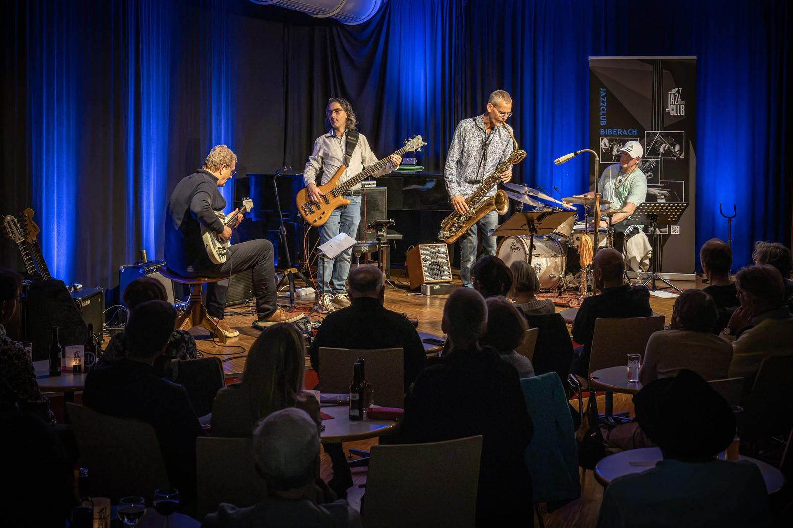

KONZERTKRITIK - NuMoksha: Hochenergetischer NuJazz aus der Nachbarstadt im Jazzkeller
09.10.2026, Jazzclub Biberach / Jazzkeller

BIBERACH - Das neuformierte Quartett um den Drummer Ralf „Ralle“ Fricker aus Bad Waldsee und den Leiter der dortigen Musikschule, Michael Dümmler an den Saxofonen, zielt treffsicher in eine „ökologische Nische“ des Nu-Jazz und stieß beim Konzert des Biberacher Jazzclubs im Jubiläumsjahr auf große Begeisterung. Im Unterschied zur oft nur oberflächlich unterhaltsamen Stil-Melange der sogenannten „World Music“ greift das spezifische Nu-Jazz-Konzept des NuMoksha-Quartetts ungleich tiefer und intensiver in die musikalische Substanz der vorgestellten Kompositionen und Arrangements ein.
Frisch und neuartig, trotz einem gehörigen Schuss Exotik aber nicht wirklich fremd, bot das breitgefächerte und ausgewogene Programm abseits ausgetretener Pfade einen höchst interessanten Stilmix im klaren Jazzidiom. „Ralle“ Frickers Vorlieben und Vorbilder wie der jüngst verstorbene, multikulturelle, südafrikanische Weltbürger, Pianist und Komponist Abdullah Ibrahim oder der italienisch-französische Multiinstrumentalist Aldo Romano prägen neben seinem langjährigen Auslandsaufenthalt in Indien seine originelle Ästhetik. „Ralle“ Fricker ist dabei nicht nur die rhythmische Seele und stilistischer Impulsgeber von NuMoksha. Durch sein tiefes Eintauchen in die indische Kultur geht seine Musik weit über bloße Stiladaption oder wenig wertschätzende kulturelle Aneignung hinaus. Die Musik von NuMoksha vermittelt eine stimmige, authentische Neuinterpretation sorgfältig gewählter Vorlagen, wirkt zutiefst integer und wertschätzend.
Der soundverliebte Gitarrist Hugo Nägele an seinen drei Gitarren, unzähligen Effektgeräten samt Mesa-Boogie – Stereo-Sound mit einem Faible für den brasilianischen Gitarristen und Bossa Nova Pionier Baden Powell, der auch durch eine Komposition von Dominic Miller (Gitarrist von Sting) mit dem Titel „Baden“ im Programm vertreten war sowie der brasilianische E-Bass-Spieler André Lima brachten ein weiteres stilprägendes Ingrediens in das Bandkonzept ein.
Abgerundet wurde dieses durch den eloquenten und vielseitigen Michael Dümmler an Sopran- und Baritonsaxofon, der sich den norwegischen Saxofonisten Jan Garbarek und insbesondere dessen Zusammenarbeit mit dem britischen Hilliard Ensemble in dem legendären Album „Officium“ zum Vorbild genommen hat. Trotz der trockenen Akustik im Jazzkeller verstand er es, mit etwas elektronischer Hall-Unterstützung, die Weite des Kirchenraumes und der nordischen Landschaften in seinem Spiel einzufangen.
Rasante Unisonolinien in nahezu perfekter Synchronität prägten die Stücke neben häufig konstituierenden Ostinatofiguren besonders von André Limas sonorem Bass, die oft als Rückgrat der Kompositionen dienten und über und zwischen denen ausgedehnte Soloimprovisationen von Gitarre, Saxofon und Schlagzeug sich frei entfalten konnten. Auffällig vor allem in Frickers Eigenkompositionen waren klare, Pattern-basierte Strukturen, die gerade in ihrer Schlichtheit ungekünstelt und unmittelbar überzeugen konnten.
Titel wie „Berbere“ (Steve Dyer), „Samba de Amor“ (Arturo Sandoval), „History“ von Tore Brunborg, „Sunset in Goa“ oder „Baden“ (Dominic Miller/Baden Powell), „Maracuja“ (Jan Garbarek), „Afro Blue“ (John Coltrane), „Tuana Guru“ (Fricker), zumeist mit ungewöhnlich hohem energetischem Level und höchst kreativ umgesetzt, stehen für das richtungsweisende, farbenfrohe, weltoffene Konzept von NuMoksha. Mit „Scented Sands“ (Vivid Afrika), „Soweto Sorrow“ (Aldo Romano), „Kalahari Lives“ (Johnny Dyani) oder der etwas ruhigeren Zugabe „For Lion“ kamen südafrikanisches Flair und ungebremste Lebensfreude zum Ausdruck. Auch ein kubanischer Son Montuno mit typischem 3-2 bzw. 2-3 Clave-Rhythmus oder ein ungewöhnlicher, eher experimenteller gleichwohl faszinierender 5/4 Bossa durften nicht fehlen. Der bleibende Eindruck von NuMoksha erinnert an einen raffiniert und meisterlich kreierten Cuveé-Wein aus erlesenen Zutaten, harmonisch und rund mit langem, nachhaltigem Abgang.
Text und Fotos: Dr. Helmut Schönecker
Fotos: Dr. Helmut Schönecker